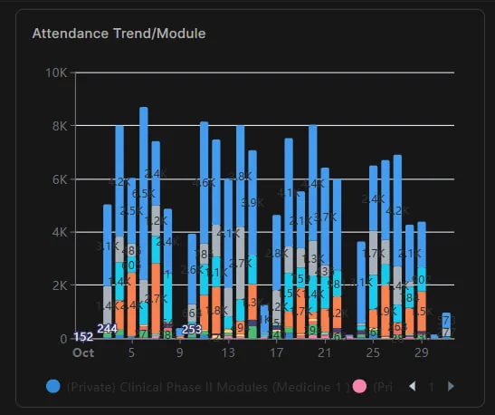
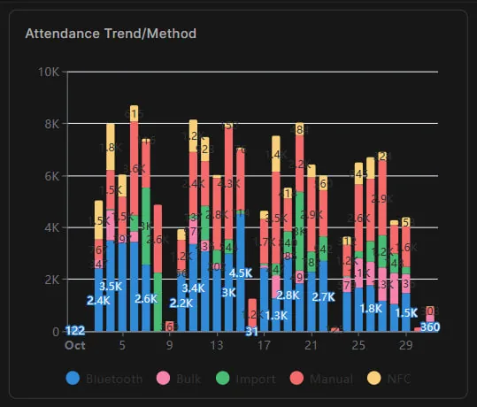
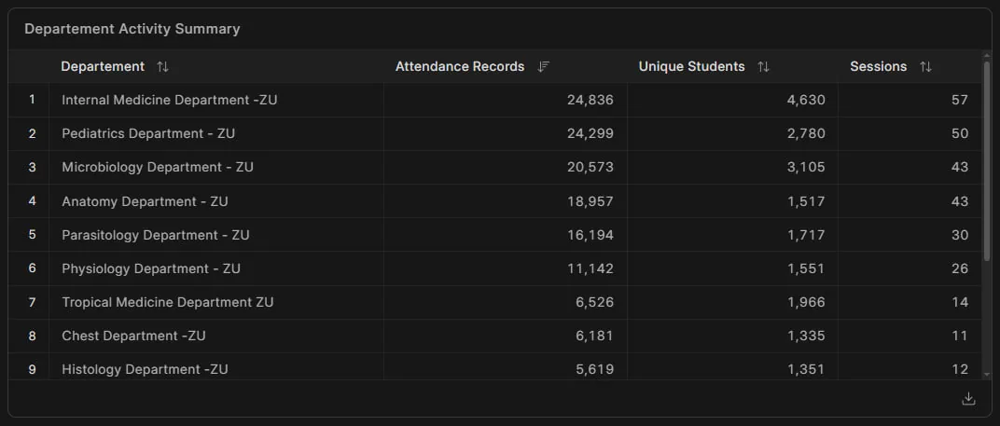
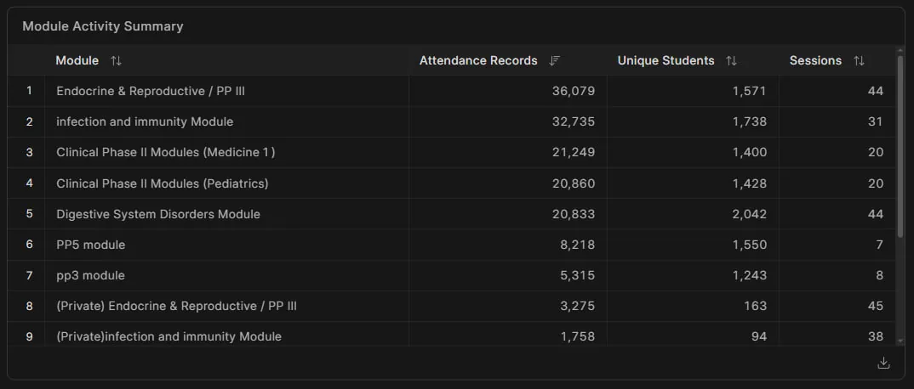

منظومة الحوكمة الرقمية للحضور الأكاديمي:
حضور واضح، سجل قابل للمراجعة، وقرار موثق.
منصة جامعية ذكية لإدارة وحوكمة الحضور الأكاديمي عبر تقنيات البلوتوث (Bluetooth) والبطاقات اللاتلامسية (NFC) واستيراد الجلسات الإلكترونية، دون الحاجة لأي أجهزة بصمة ثابتة باهظة التكلفة أو صيانة معقدة.
5 مسارات رصد ذكية تضمن عدم تعطل أي محاضرة أو تدريب سريري
صُممت المنظومة لتعمل بكفاءة كاملة داخل المدرجات كثيفة العدد أو المستشفيات الجامعية ذات التغطية الضعيفة للإنترنت.
الرصد عبر البلوتوث (Bluetooth)
تحقق مكاني فوري داخل القاعة أو المدرج في ثوانٍ معدودة عبر هاتف المحاضر وهواتف الطلاب دون الحاجة لأجهزة خارجية.
البطاقات اللاتلامسية (NFC)
تمرير بطاقة الطالب الذكية على هاتف المحاضر أو المشرف في السكاشن العملية والعيادات السريرية حتى بدون اتصال إنترنت للطالب.
استيراد جلسات Microsoft Teams
دمج مباشر لتقارير حضور المحاضرات الإلكترونية عن بُعد ومطابقتها تلقائيًا مع السجل الأكاديمي لكل طالب.
القائمة الإلكترونية السريعة
كشف رقمي ذكي يمكّن عضو هيئة التدريس من التحضير اليدوي السريع للمجموعات الصغيرة مع حفظ فوري في السحابة.
المسار الاستثنائي الموثق والأعذار
بوابة إلكترونية لتقديم الأعذار الطبية والبلاغات الموثقة ومراجعتها واعتمادها بسجل تدقيق كامل (Audit Trail).
صفر أجهزة بصمة ثابتة
توفير مئات الآلاف من الجنيهات المهدرة في شراء وصيانة أجهزة البصمة التي تتعطل مع الأعداد الضخمة وتسبب تكدس الطلاب.
أربعة أطراف في حلقة رقمية واحدة مترابطة
لكل مستخدم داخل الكلية واجهة مصممة خصيصًا لمهامه اليومية لضمان سهولة الاستخدام وسرعة الاعتماد.
1. تجربة الطالب الجامعي
جدول دراسي تفاعلي ذكي، إثبات حضور في ثوانٍ عبر البلوتوث أو بطاقة NFC، متابعة فورية لنسب الغياب والإنذارات الأكاديمية، وتقديم البلاغات والأعذار إلكترونيًا دون طوابير شؤون الطلاب.
2. تجربة المحاضر وعضو هيئة التدريس
استعراض جلسات اليوم والغد، بدء رصد القاعة في أقل من دقيقة، اعتماد القوائم النهائية، وحسم بلاغات الطلاب بضغطة زر مع حفظ حقوق المحاضر والطالب.
3. لوحة المنسق الأكاديمي
رفع الجداول الدراسية بصيغة Excel دفعة واحدة، مراقبة التزام الجلسات بالرصد، وإدارة "بوابة الجاهزية" للتحقق من اكتمال البيانات قبل إصدار أي قرارات حرمان أو إنذار.
4. لوحة القيادات الأكاديمية والعمداء
رؤية لحظية شاملة لنسب الحضور عبر 34 قسمًا أكاديميًا وسريريًا، مؤشرات التزام الأقسام، وتقارير رسمية جاهزة للطباعة والاعتماد في مجالس الكليات.
معاينة تطبيق الحضور ولوحات التقارير الإدارية
تصفح شاشات تطبيق الهاتف ولوحات القيادة الفعلية للنظام (اضغط على أي صورة لتكبيرها).

المؤشرات العامة للكلية

تحليلات الأقسام الأكاديمية

بوابة الجاهزية والإنذارات

سجل الطالب والبلاغات